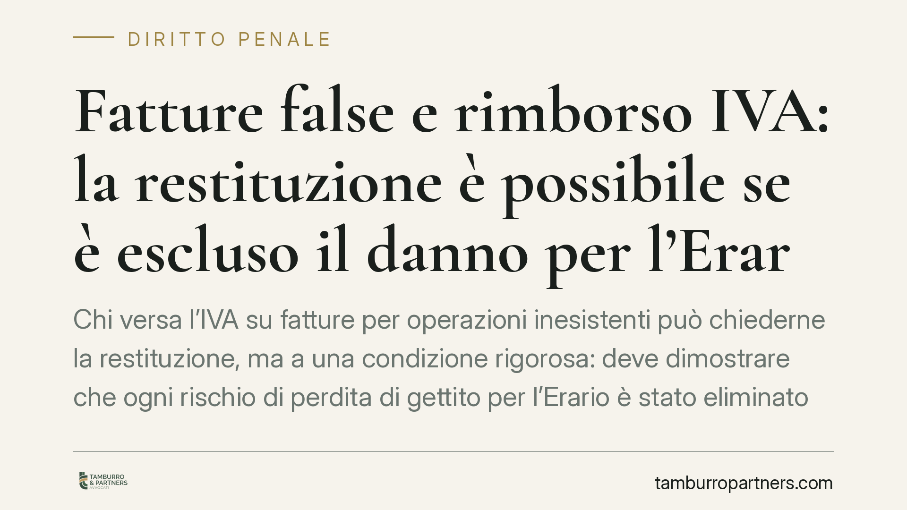

Fatture false e rimborso IVA: la restituzione è possibile se è escluso il danno per l'Erario
Chi versa l'IVA su fatture per operazioni inesistenti può chiederne la restituzione, ma a una condizione rigorosa: deve dimostrare che ogni rischio di perdita di gettito per l'Erario è stato eliminato, ad esempio provando che l'emittente ha già versato l'imposta. Il principio tocca il delicato rapporto tra responsabilità cartolare, funzione antifrode e tutela della neutralità dell'IVA.

Il fatto
Il tema è noto a chi si occupa di contenzioso tributario e di reati fiscali: l'IVA indicata in una fattura per operazioni inesistenti è comunque dovuta da chi emette il documento. La regola, apparentemente severa, ha una logica antifrode precisa. Ma cosa accade quando il contribuente, dopo aver pagato, vuole recuperare quanto versato perché a monte non vi era alcuna operazione reale?
La risposta non è un secco diniego. La restituzione è ammessa, ma subordinata alla prova che l'operazione non abbia prodotto alcun danno effettivo per il bilancio pubblico.
Inquadramento normativo
Il punto di partenza è l'art. 21, comma 7, del DPR 633/1972. La norma stabilisce che, se in fattura sono indicate operazioni inesistenti oppure l'imposta è esposta in misura superiore a quella reale, l'IVA è dovuta per l'intero ammontare indicato nel documento.
Qui opera il cosiddetto principio di cartolarità: l'imposta è dovuta in forza stessa dell'emissione della fattura, a prescindere dall'esistenza dell'operazione sottostante. La ratio è antifrode. La fattura, infatti, legittima chi la riceve a detrarre l'IVA: se l'emittente non versasse quanto indicato, l'Erario subirebbe una perdita pari alla detrazione operata a valle. Il comma 7 serve quindi a "chiudere il cerchio" e a neutralizzare questo rischio.
Il luogo in cui oggi si disciplina la restituzione dell'IVA non dovuta è l'art. 30-ter del DPR 633/1972, introdotto nel 2017 e operativo dalle dichiarazioni successive. La norma prevede un termine di decadenza di due anni per la domanda di restituzione, decorrente dal versamento dell'imposta o, se successivo, dal verificarsi del presupposto della restituzione. È questa la sede specifica da richiamare in materia di rimborso IVA, e non la disciplina residuale sui rimborsi tributari.
Sul piano eurounitario, il riferimento cardine è la sentenza della Corte di Giustizia C-454/98, Schmeink & Cofreth e Strobel: la restituzione dell'imposta indebitamente fatturata deve essere consentita quando l'emittente ha eliminato completamente, in tempo utile, il rischio di perdita di gettito fiscale. È il principio che la giurisprudenza nazionale ha recepito e che governa anche il caso delle operazioni inesistenti.
> Nota redazionale. La fonte segnala una recente ordinanza della Cassazione (indicata come n. 28368/2026) in linea con questo orientamento. Non abbiamo potuto verificare autonomamente gli estremi e il testo integrale della pronuncia alla data di redazione; il principio illustrato resta comunque fondato sulla normativa vigente e sulla consolidata giurisprudenza eurounitaria sopra citata.
Due binari distinti: penale e tributario
È essenziale tenere separati i piani.
La fatturazione di operazioni inesistenti può integrare reati fiscali: emissione (art. 8 D.Lgs. 74/2000) o dichiarazione fraudolenta mediante uso di tali fatture (art. 2 D.Lgs. 74/2000). Questo è il binario penale.
Altra cosa è il binario tributario, dove si discute se e quanta IVA sia dovuta e se spetti la restituzione. La possibilità di ottenere il rimborso non cancella l'eventuale rilevanza penale della condotta, né la esclude in via automatica. Si tratta di valutazioni autonome, con presupposti e tempi propri.
Va inoltre precisato che l'adesione a una definizione agevolata – come quelle introdotte dal D.L. 119/2018 (convertito, secondo i dati disponibili, dalla L. 136/2018; estremi da verificare in concreto rispetto alla singola misura) – non preclude di per sé la successiva richiesta di restituzione, se ne ricorrono i presupposti sostanziali.
Implicazioni pratiche
Per l'impresa o il professionista che si trovi ad aver versato IVA su fatture relative a operazioni inesistenti, il messaggio è chiaro: la restituzione non è preclusa, ma è condizionata a un onere probatorio stringente. Non basta affermare che l'operazione non c'era. Occorre dimostrare, documenti alla mano, che l'Erario non ha subìto e non subirà alcuna perdita di gettito.
La prova tipica è il versamento dell'imposta da parte dell'emittente, oppure la rettifica a valle della detrazione eventualmente operata dal destinatario della fattura. Senza questa dimostrazione, il diniego di rimborso è legittimo.
Cosa fare in concreto
- Ricostruite la catena IVA: individuate chi ha emesso, chi ha detratto e verificate se l'imposta è stata effettivamente versata a monte.
- Raccogliete la prova dell'assenza di danno erariale: quietanze di versamento dell'emittente, note di variazione, rettifiche della detrazione a valle.
- Monitorate il termine biennale dell'art. 30-ter DPR 633/1972 e individuate con precisione il dies a quo, per evitare la decadenza.
- Separate la strategia penale da quella tributaria: una scelta efficace sul fronte fiscale può incidere sul procedimento penale, e viceversa. Coordinate le due difese.
- Valutate l'impatto di eventuali definizioni agevolate già perfezionate, verificando se residui spazio per la domanda di restituzione.
Conclusione
Il sistema riconosce la restituzione dell'IVA solo dove sia accertato che la neutralità dell'imposta non è stata compromessa a danno della collettività. L'impostazione difensiva, sia tributaria sia penale, deve costruirsi attorno a questo dato: la prova dell'eliminazione del rischio di gettito.
---
Contributo informativo a cura di Tamburro & Partners – Avv. Giuseppe Tamburro. Non costituisce parere legale.
Ogni condominio ha una storia a sé.
Se gestisci un'amministrazione e vuoi un confronto su una specifica questione condominiale, scrivi allo studio. Ti rispondiamo entro un giorno lavorativo.